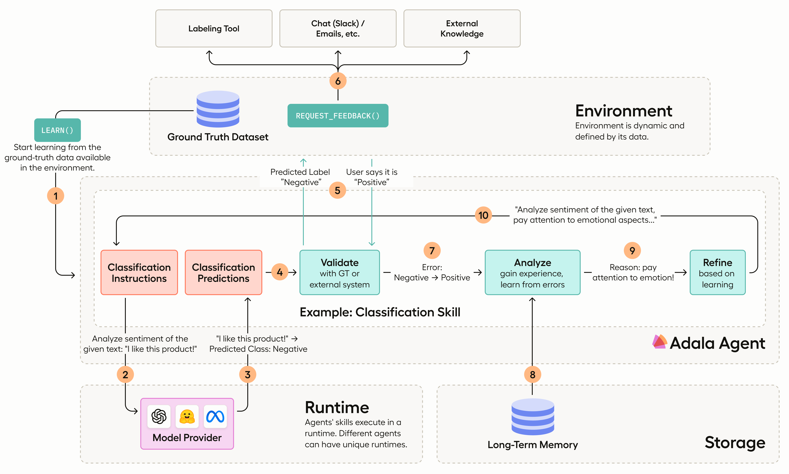

Quickstart
Adala is an Autonomous DAta (Labeling) Agent framework.
Adala offers a robust framework for implementing agents specialized in data processing, with an emphasis on diverse data labeling tasks. These agents are autonomous, meaning they can independently acquire one or more skills through iterative learning. This learning process is influenced by their operating environment, observations, and reflections. Users define the environment by providing a ground truth dataset. Every agent learns and applies its skills in what we refer to as a "runtime", synonymous with LLM.

Installation
Install Adala:
pip install adala
Prerequisites
Set OPENAI_API_KEY (see instructions here)
🎬 Quickstart
In this example we will use Adala as a standalone library directly inside Python notebook.
Click here to see an extended quickstart example.
import pandas as pd
from adala.agents import Agent
from adala.environments import StaticEnvironment
from adala.skills import ClassificationSkill
from adala.runtimes import OpenAIChatRuntime
from rich import print
# Train dataset
train_df = pd.DataFrame([
["It was the negative first impressions, and then it started working.", "Positive"],
["Not loud enough and doesn't turn on like it should.", "Negative"],
["I don't know what to say.", "Neutral"],
["Manager was rude, but the most important that mic shows very flat frequency response.", "Positive"],
["The phone doesn't seem to accept anything except CBR mp3s.", "Negative"],
["I tried it before, I bought this device for my son.", "Neutral"],
], columns=["text", "sentiment"])
# Test dataset
test_df = pd.DataFrame([
"All three broke within two months of use.",
"The device worked for a long time, can't say anything bad.",
"Just a random line of text."
], columns=["text"])
agent = Agent(
# connect to a dataset
environment=StaticEnvironment(df=train_df),
# define a skill
skills=ClassificationSkill(
name='sentiment',
instructions="Label text as positive, negative or neutral.",
labels={'sentiment': ["Positive", "Negative", "Neutral"]},
input_template="Text: {text}",
output_template="Sentiment: {sentiment}"
),
# define all the different runtimes your skills may use
runtimes = {
# You can specify your OPENAI API KEY here via `OpenAIRuntime(..., api_key='your-api-key')`
'openai': OpenAIChatRuntime(model='gpt-3.5-turbo'),
},
default_runtime='openai',
# NOTE! If you have access to GPT-4, you can uncomment the lines bellow for better results
# default_teacher_runtime='openai-gpt4',
# teacher_runtimes = {
# 'openai-gpt4': OpenAIRuntime(model='gpt-4')
# }
)
print(agent)
print(agent.skills)
agent.learn(learning_iterations=3, accuracy_threshold=0.95)
print('\n=> Run tests ...')
predictions = agent.run(test_df)
print('\n => Test results:')
print(predictions)
Reference
- Agents - main interface for interacting with environment
- Datasets - data inputs for agents
- Environments - environments for agents, where it collects ground truth signal
- Memories - agent's memory for storing and retrieving data
- Runtimes - agent's execution runtime (e.g. LLMs providers)
- Skills - agent skills for data labeling